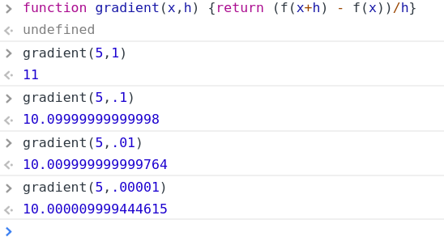

How to use these notes
These notes include just the main points that we will cover during the lecture sessions. They are not detailed enough to serve as a standalone tutorial, largely because they do not explain what you should do if something goes wrong or does not work - these things we will cover during the sessions.Setting up the coding window.
- Click the 3 vertical dots at the top right corner.
- Click 'More tools'.
- Click 'Developer tools'.
- On the menu bar at the top of the new window that has (or should have) opened on the right, click 'Console'.
- Drag the left hand border of the window to the left to widen it.
Telling it what to do...
- You can enter instructions on the line with a blue rightward arrowhead.
- Here we tell it that a variable called 'data' should have the value 10 by typing 'data = 10' after the blue arrow and hitting 'enter'. Chrome reponds by echoing this back on the line with a '<-', and turning the blue arrow to grey to indicate that the instruction has been dealt with (or 'executed').
- This is a screenshot of a set of instructions - those that have been executed are indicated by a grey arrow, with Chrome's response on the 'next' line and indicated by a leftward arrow. Enter the instructions one-by-one to replicate these lines - if you make a mistake just enter the corrected version next to the blue arrow when it reappears.
- Now we add a simple function, f(x) = x * x (just continue by adding these lines to those you already have - we don't repeat the earlier ones here but they should still be in your console window).
- And this is another, g(x)= x * 100.
- Now we tell Chrome how to calculate an approximation to the gradient of our function f(x). 
- We know that the formula for the exact gradient is f'(x)=2x, so the numerical gradient for this example is 10. As h gets smaller in the lines above, the result converges on 10 as the presentation slides predict.
- Now we get Chrome to give us something more descriptive.
- To get your results echoed to the notes on this side of the screen enter the following:
- Adding a `loop' to repeat an instruction many times. ('console.log(...)' echoes the result back to the screen in a way that is more useful than using 'return' here.)
- We can get this to produce several approximations to the gradient with the following:

Your result will appear here.